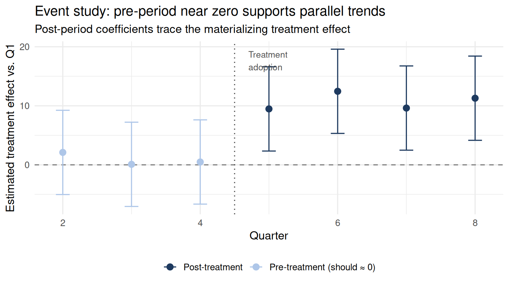
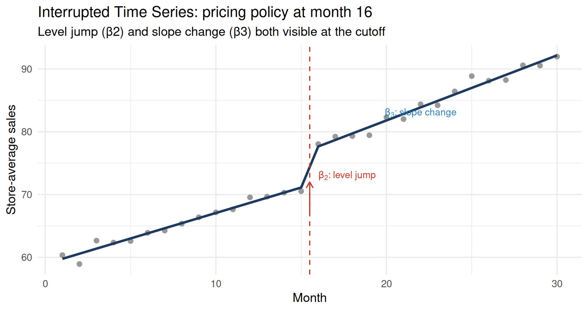

35.1 Section 1: Introduction — Module 3 Meets Panel Data
Module 3 covered six sources of endogeneity and six identification strategies. The discussion there was largely cross-sectional: a researcher observes units at one point in time and tries to isolate causal effects despite confounding. This chapter applies each of those strategies to longitudinal panel data, where units are observed repeatedly across time. The time dimension creates both new problems (time-varying confounders, dynamic selection) and new opportunities (the ability to difference out stable confounders using fixed effects, the ability to exploit policy rollout dates as natural experiments).
The table below maps Module 3 threats to their panel-data solutions.
Module 3 identification strategies mapped to their panel-data analogs
Module 3 Threat
Panel Solution
Key R Function
Time-invariant OVB (Part 1)
Fixed effects (Module 1)
lmer(..., REML=F) or plm(model="within")
Time-varying endogeneity (Part 2 IV)
Panel IV
ivreg(y ~ x + factor(unit) | z + factor(unit))
Policy adoption at known date (Part 5 DiD)
TWFE + event study
plm(model="within", effect="twoways")
Temporal threshold (Part 4 RDD)
Interrupted Time Series
lmer(y ~ t + post + t_post + (1|unit))
Non-random treatment adoption (Part 6 PS)
Time-varying PS matching
matchit() at each adoption wave
Non-random attrition (Part 3 Selection)
Available-case lmer + MI
Module 4 Part 9
The sections that follow walk through hands-on implementations of the most commonly needed strategies: two-way fixed effects DiD with an event study, interrupted time series (the temporal RDD), and panel IV.
35.2 Section 2: Panel DiD with Two-Way Fixed Effects
35.2.1 Setup and simulation
The two-way fixed effects (TWFE) estimator is the workhorse of panel difference-in-differences. It absorbs unit fixed effects (removing stable confounders) and time fixed effects (removing common shocks), then estimates the treatment effect from within-unit, within-period variation.
We simulate 60 firms observed over 8 quarters. Thirty firms adopt a management initiative at quarter 5. The true average treatment effect on the treated (ATT) is 10 productivity points.
# 1. Manual 2x2 DiDdid_manual <-with( df_twfe |>group_by(treated, post) |>summarise(y =mean(productivity), .groups ="drop"), (y[treated ==1& post ==1] - y[treated ==1& post ==0]) - (y[treated ==0& post ==1] - y[treated ==0& post ==0]))cat("Manual DiD estimate:", round(did_manual, 2), "\n")
Manual DiD estimate: 10.04
Code
# 2. Regression DiD with firm-clustered SEsm_reg_did <-lm(productivity ~ treated * post, data = df_twfe)se_cluster <-coeftest(m_reg_did, vcov =vcovCL(m_reg_did, cluster =~firm))# 3. TWFE via plm (two-way within)pdata_twfe <-pdata.frame( df_twfe |>mutate(firm_id =as.integer(firm), qtr =as.integer(quarter)),index =c("firm_id", "qtr"))m_twfe <-plm(productivity ~ D, data = pdata_twfe,model ="within", effect ="twoways")
All three approaches recover the true ATT ≈ 10. Clustered SEs exceed naive SEs because productivity shocks are correlated within firms over time.
Method
Estimate
Std. Error
Manual DiD
10.04
NA
Regression DiD (naive SE)
10.04
1.835
Regression DiD (clustered SE)
10.04
0.680
TWFE via plm
10.04
NA
WarningWhy Cluster Standard Errors in Panel DiD?
Observations within the same firm are not independent — productivity shocks persist over time. Treating them as independent (naive OLS SEs) understates uncertainty and inflates Type I error rates. The rule of thumb: cluster at the level of treatment assignment. Here, treatment varies at the firm level, so we cluster on firm. With fewer than ~30 clusters, consider wild cluster bootstrap (fwildclusterboot package).
35.2.3 Event study: testing parallel trends
The parallel trends assumption — that treated and control firms would have followed the same trajectory absent treatment — is not directly testable, but we can look for violations by checking whether pre-treatment differences in trends are already present.
Code
m_event <-lm(productivity ~ treated *factor(quarter), data = df_twfe)event_df <- broom::tidy(m_event, conf.int =TRUE) |>filter(str_detect(term, "treated:")) |>mutate(quarter =as.integer(str_extract(term, "[0-9]+")),pre = quarter <5 )ggplot(event_df, aes(x = quarter, y = estimate, color = pre)) +geom_hline(yintercept =0, linetype ="dashed", color ="gray50") +geom_vline(xintercept =4.5, linetype ="dotted", color ="gray30") +geom_errorbar(aes(ymin = conf.low, ymax = conf.high), width =0.2) +geom_point(size =3) +scale_color_manual(values =c("FALSE"="#1e3a5f", "TRUE"="#aec6e8"),labels =c("FALSE"="Post-treatment", "TRUE"="Pre-treatment (should \u2248 0)") ) +annotate("text", x =4.7, y =max(event_df$conf.high) *0.9,label ="Treatment\nadoption", hjust =0, size =3.5, color ="gray30") +labs(title ="Event study: pre-period near zero supports parallel trends",subtitle ="Post-period coefficients trace the materializing treatment effect",x ="Quarter",y ="Estimated treatment effect vs. Q1",color =NULL ) +theme_minimal(base_size =13) +theme(legend.position ="bottom")

Pre-period interaction coefficients (light blue) are scattered around zero — consistent with parallel pre-trends. Post-period coefficients (dark blue) step up after quarter 5 and hover near the true effect of 10. If the pre-period coefficients showed a systematic upward or downward slope, that would be evidence of pre-existing differential trends and would undermine the DiD identification assumption.
TipReading an Event Study Plot
Pre-period coefficients near zero: parallel trends plausible. Fail this check and DiD is suspect.
Sharp jump at treatment date: consistent with an immediate treatment effect.
Gradual post-period increase: treatment effect builds over time (dynamic effects).
Anticipation effects (pre-period coefficients trending upward before treatment): firms may be responding in advance; adjust the “post” indicator.
35.3 Section 3: Interrupted Time Series (Temporal RDD)
35.3.1 Concept
Interrupted Time Series (ITS) applies the RDD logic to time rather than a continuous running variable. When a policy takes effect at a known calendar date \(c\), we look for a discontinuity in the time series at that date — a sudden level jump and/or a change in slope. The key identification assumption mirrors RDD’s continuity assumption: absent the policy, the time trend would have continued smoothly through \(c\).
where \(D_t = \mathbf{1}[t \geq c]\), \(t - c\) is time elapsed since the intervention (zero before), \(u_{0i}\) is a unit random intercept (absorbing stable unit differences), and \(\varepsilon_{it}\) is idiosyncratic error.
\(\beta_1\): pre-intervention monthly trend
\(\beta_2\): immediate level change at month \(c\) (the “jump”)
\(\beta_3\): additional slope change after intervention (change in rate of change)
35.3.2 Simulation
We simulate 40 retail stores observed for 30 months. A new pricing policy takes effect at month 16. The true DGP has a \(+5\) level jump and a \(+0.3\)/month additional slope change.
store_avg <- df_its |>group_by(month) |>summarise(mean_sales =mean(sales), .groups ="drop")# Predicted values from lmer for an average storepred_df <-tibble(month =1:n_months,post =as.integer(month >=16),t_post =pmax(month -15, 0),store =factor(1) # prediction for store 1 (fixed effects only for plot))pred_df$pred <-predict(m_its, newdata = pred_df, re.form =NA)ggplot(store_avg, aes(x = month, y = mean_sales)) +geom_point(color ="gray60", size =2) +geom_line(data = pred_df, aes(y = pred), color ="#1e3a5f", linewidth =1.2) +geom_vline(xintercept =15.5, linetype ="dashed", color ="#c0392b") +annotate("segment",x =15.5, xend =15.5, y =67, yend =72,arrow =arrow(length =unit(0.25, "cm")), color ="#c0392b") +annotate("text", x =16, y =73,label =expression(beta[2]*": level jump"), hjust =0,color ="#c0392b", size =3.5) +annotate("text", x =22, y =83,label =expression(beta[3]*": slope change"),color ="#2980b9", size =3.5) +labs(title ="Interrupted Time Series: pricing policy at month 16",subtitle ="Level jump (\u03b22) and slope change (\u03b23) both visible at the cutoff",x ="Month",y ="Store-average sales" ) +theme_minimal(base_size =13)

35.3.4 Pre-trend test
The ITS equivalent of the RDD density (McCrary) test is to check whether the pre-intervention trend is genuinely linear, or whether a non-linear pre-trend exists that could masquerade as a level jump. A simple diagnostic:
Code
df_pre <- df_its |>filter(month <16)m_pretrend <-lmer(sales ~ month +I(month^2) + (1| store), data = df_pre)broom.mixed::tidy(m_pretrend, effects ="fixed") |> knitr::kable(digits =4,caption ="Pre-period model with quadratic term. If I(month^2) is far from zero, the pre-trend is curved and the level-jump interpretation is suspect.")
Pre-period model with quadratic term. If I(month^2) is far from zero, the pre-trend is curved and the level-jump interpretation is suspect.
effect
term
estimate
std.error
statistic
df
p.value
fixed
(Intercept)
58.8091
1.1789
49.8840
82.1548
0.0000
fixed
month
0.8607
0.1992
4.3215
558.0000
0.0000
fixed
I(month^2)
-0.0031
0.0121
-0.2557
558.0000
0.7982
A quadratic coefficient near zero in the pre-period supports the linearity assumption. A large quadratic coefficient means the trajectory was already bending at the cutoff — the ITS level jump would be confounded.
35.4 Section 4: Panel IV
35.4.1 When fixed effects are not enough
Unit fixed effects remove time-invariant confounders. But if a confounder varies both across units and across time — and is correlated with the predictor — FE alone is insufficient. Panel IV combines the within-unit differencing of FE with an instrument that shifts the endogenous predictor but has no direct path to the outcome.
35.4.2 Simulation: R&D investment and patents
We simulate 200 firms over 6 years. R&D investment is endogenous (high-quality firms invest more). Industry-level tax incentives serve as the instrument (relevant to R&D, excluded from the patent equation except through R&D).
# OLS + FE: still biased by time-varying fq-rd correlationm_ols_fe <-lm(patents ~ rd +factor(firm) +factor(year), data = df_piv)# IV + FE: use tax_inc as instrument, include firm + year FEm_iv_fe <-ivreg( patents ~ rd +factor(firm) +factor(year) | tax_inc +factor(firm) +factor(year),data = df_piv)# First-stage F-statisticfs <-lm(rd ~ tax_inc +factor(firm) +factor(year), data = df_piv)fs_F <-summary(fs)$fstatistic[1]cat("First-stage F on instrument:", round(fs_F, 1), "\n")
First-stage F on instrument: 32.2
OLS + FE overestimates the R&D effect because time-varying firm quality (fq) remains a confounder. IV recovers the true coefficient of 0.5.
Model
Estimate
Std. Error
True value
OLS + unit/year FE
0.4933
0.0176
0.5
IV + unit/year FE
0.4384
0.0552
0.5
WarningWeak Instruments in Panel Data
Panel fixed effects remove between-unit variation and retain only within-unit variation. This can substantially weaken an instrument that looked strong in cross-sectional data: the industry tax incentive varies mostly across industries, and much of that cross-industry variation is soaked up by the firm fixed effects. Always check the first-stage \(F\)-statistic using the demeaned (within-transformed) data, not the raw data. The conventional threshold is \(F > 10\); for inference-robust methods (Anderson-Rubin test), the threshold matters less.
# Safe check: first stage on demeaned data via plmpdata_piv <-pdata.frame(df_piv |>mutate(firm_id=as.integer(firm), yr=as.integer(year)),index=c("firm_id","yr"))fs_within <-plm(rd ~ tax_inc, data=pdata_piv, model="within", effect="twoways")summary(fs_within)
When units adopt a treatment at different waves — a staggered rollout rather than a single cutoff — the two-by-two DiD logic breaks down because the “post” period differs across treated units. Two-way FE with staggered adoption can produce negatively-weighted treatment effect estimates when treatment effects are heterogeneous across cohorts (the “negative weighting” problem documented by Callaway & Sant’Anna, 2021).
One practical alternative is time-varying propensity score matching, which handles staggered adoption explicitly:
Step 1: For each adoption wave \(w\), identify: - Firms that just adopted in wave \(w\) (the “treated” at wave \(w\)). - Firms that have not yet adopted by wave \(w\) (the “not-yet-treated” controls).
Step 2: Compute the propensity score at wave \(w\) among eligible units:
Step 3: Match treated firms to the most similar not-yet-treated firms at that wave using nearest-neighbor matching within the wave-specific pool.
Step 4: Estimate the ATT on the matched sample, using the matched controls’ post-adoption outcomes as the counterfactual.
This approach produces a cohort-specific ATT for each adoption wave, which can be aggregated into an overall ATT. It is conceptually equivalent to the Callaway & Sant’Anna (2021) estimator (available in the did package) and is doubly robust when combined with outcome regression.
Combining time-varying PS weighting with DiD regression produces an estimator that is doubly robust: consistent if either (a) the propensity score model is correctly specified, or (b) parallel trends holds conditional on covariates. Neither assumption alone is sufficient for ordinary DiD; neither alone is sufficient for ordinary PSM. The combination of both provides extra insurance. See drdid package for implementation.
35.6 Section 6: Decision Tree — Which Strategy for Which Panel Problem?
TipWhich Identification Strategy for Which Panel Problem?
Problem
Method
Key assumption
Module reference
Stable unit-level confounders
Unit fixed effects
Time-invariant endogeneity
M1 Parts 1–2
Time-varying endogeneity
Panel IV
Instrument relevance + exclusion restriction
M3 Part 2
Parallel policy rollout
TWFE DiD
Parallel trends
M3 Part 5
Staggered adoption
Callaway-Sant’Anna / drdid
Parallel trends by cohort
M3 Part 5
Temporal policy cutoff
ITS
Continuity of time trend at cutoff
M3 Part 4
Non-random treatment adoption
Time-varying PS matching
Selection on observables
M3 Part 6
Non-random attrition
Available-case lmer + MI
MAR
M4 Part 9
The first question is always: what creates the identifying variation? Time, a threshold, an instrument, or a policy rollout? The answer determines the method.